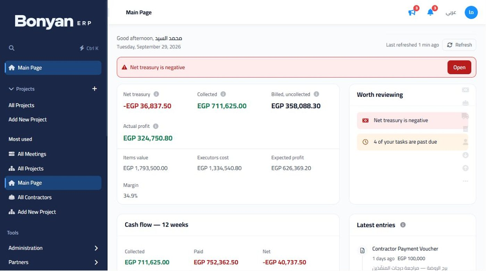
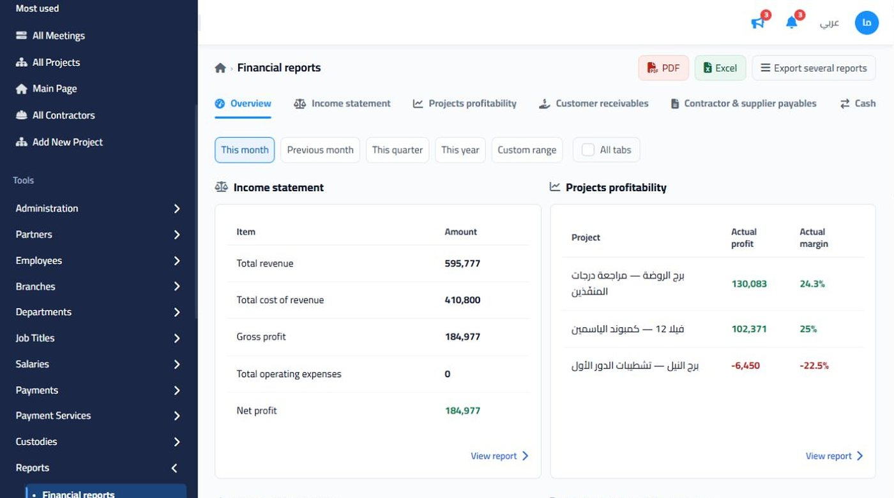

An ERP whose books an auditor can read.
Bonyan is a multi-tenant SaaS ERP for project-based companies — contracting, finishing and fit-out firms that need to know which project makes money. I built its foundation, Loom ERP, from scratch, and its public website, bonyan-erp.com; today I lead the development team and own the product. Its accounting core was designed by the accountant I used to be: a Bachelor of Commerce in Accounting and two years of audit and tax work before I wrote production code.

Pick a business event. Watch the ledger post it.
Users never write journal entries for daily work. They record what happened — a progress bill, a contractor statement, a goods receipt — and Bonyan derives the double entry from about fifty mapped posting roles. The source document stays the single source of truth; the ledger is a projection of it, so the two can never disagree.
| Code | Account | Debit | Credit |
|---|
Account codes and names are the real seed chart every new Bonyan tenant starts with (shortened here). Amounts are illustrative; tax rates and payroll deductions are configured per company.
Decisions that come from having closed the books myself.
A tree, not a list
The chart of accounts is a five-level tree under five roots — assets, liabilities, equity, revenue, expenses. Children inherit their root’s type, codes extend the parent’s code, and contra accounts carry their own normal side: partner withdrawals sit in equity with a debit nature, the doubtful-debts allowance in assets with a credit one.
Nothing hides in suspense
Anything that cannot be mapped cleanly lands in suspense account 1901 — and automated probes fail the build if it is not empty. Parity tests compare every report against the ledger, so the trial balance and the project-profit screen can never tell different stories.
Closed means closed
Months lock. A closed month is frozen as a snapshot protected by a hash chain, so any later change is detectable. Reopening creates a numbered revision instead of silently rewriting history, and year-end close moves the result to retained earnings in one atomic step.
Posted entries are reversed, never edited
Manual journal entries move from draft to posted. After that the only way to correct one is a reversing entry — exactly the audit trail I used to ask clients for.
Standards, not shortcuts
Fixed assets follow IAS 16 and IAS 36: straight-line and declining-balance depreciation, revaluations, impairment and its reversal, disposal with gain or loss. Inventory follows IAS 2 with a moving weighted-average cost per item per warehouse.
Procure-to-pay that reconciles
Purchase requests, orders, receipts and supplier bills are settled by three-way matching through a goods-received-not-invoiced account (2107), with retentions, credit notes, input VAT and withholding handled on the way.

From the first line of Loom to running the team behind Bonyan.
Built the foundation from scratch
Loom ERP — projects, BOQ items, contractors, custodies, vouchers, HR — was my build from an empty repository. Bonyan grew out of it, and I have since added the general ledger, financial statements, fixed assets, inventory, purchasing, payroll accruals, project taxes and the AI gateway.
Team lead and product manager
I own the roadmap, and it starts with subscribers: I talk to owners and accountants directly and turn their requests into specs. No two contracting firms work alike, so features usually ship as per-company options — cash or accrual reporting, per-project tax rules, permission profiles — not one fixed workflow. Big designs are reviewed adversarially before merge; releases ship through one ordered command: backup, tenant migrations, deploy.
Faster, without breaking a route
I upgraded the frontend from Angular 8 to 21 in thirteen incremental steps, keeping every route working at each one — 231 components and 83 services carried forward onto a faster, lighter build. Speed and usability fixes since then come straight from where users get stuck.
AI agents with a seatbelt
An MCP gateway lets Claude or ChatGPT work inside a company’s workspace: OAuth 2.0 with PKCE, 24 scopes, around 68 tools — and a human approval step before anything that deletes, approves or pays.
One database per company
Every tenant gets its own MySQL database, resolved from its subdomain and provisioned by a queued job from a schema template plus 122 numbered migrations. A full export and restore runs through a shadow database with an atomic swap.
Tested like money depends on it
Backend parity tests and report probes, PHPUnit on the SaaS layer, and 194 frontend spec files with about 1,800 test cases — most of the ledger, inventory and report tests are mine.
bonyan-erp.com — where every customer starts.
I also built the product’s public website: the first thing a contracting company sees, and the page that turns a visitor into a trial.
Arabic and English, properly
Next.js with next-intl and a true RTL layout, so the Arabic site is a first-class site rather than a translated one.
Shows the real product
A narrated tour of the live system and high-resolution captures of the dashboard, treasury and financial reports — no mock-ups.
Pricing that answers questions
Cloud or self-hosted, monthly or yearly, with the local payment options spelled out — then a 14-day free trial with no card.
A public “What’s new”
Every release is published to a changelog on the site, so subscribers see the product moving — and the requests they sent turning into features.
Five repositories, one product.
An Angular ERP client, a PHP 8 API with the accounting engine, a Laravel 12 SaaS layer for subscriptions, billing and tenant provisioning, and two Next.js apps for the admin dashboard and the bilingual marketing site.